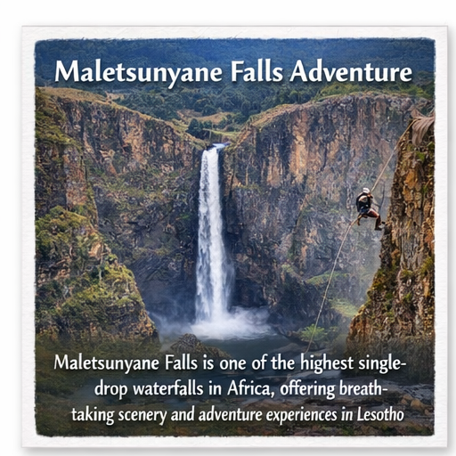
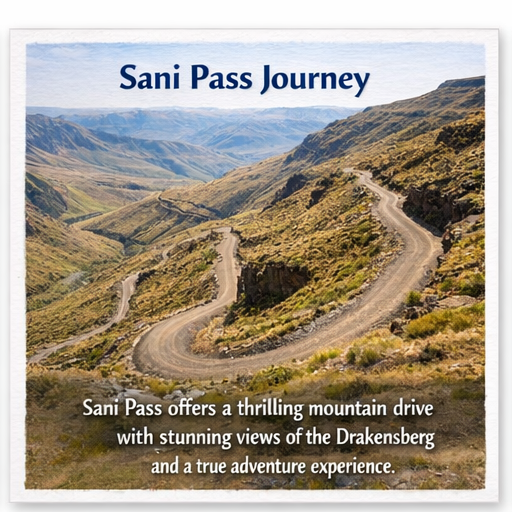
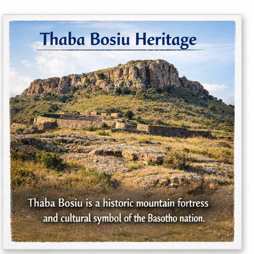
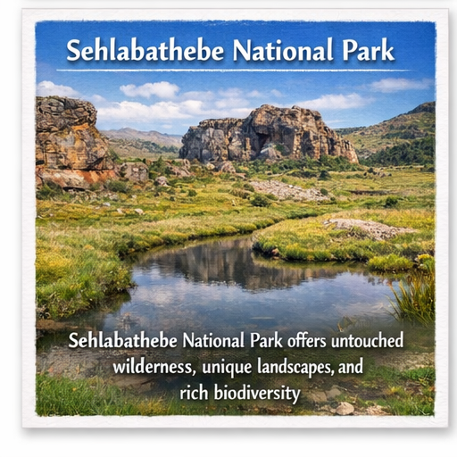
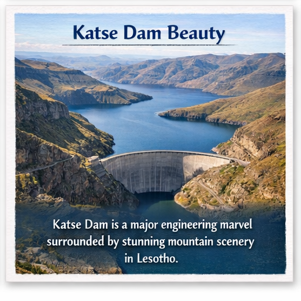
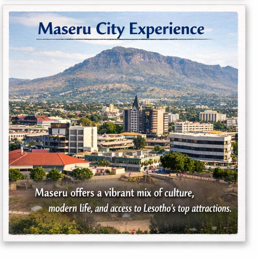

Visitors experience emotional connection with nature (Page, 2020). Furthermore, this aspect plays a significant role in enhancing the overall visitor experience within the destination. It also contributes to sustainable tourism development by balancing environmental conservation with economic benefits. Scholars emphasize that such initiatives improve destination competitiveness and long-term viability (UNWTO, 2019). In addition, community involvement ensures that tourism benefits are distributed more equitably among local stakeholders. Therefore, continuous improvement and strategic planning remain essential for maintaining high standards in the tourism sector.
Visual storytelling is a powerful tool in tourism marketing, allowing destinations to communicate their identity through images and media. In Lesotho, photographs of mountains, culture, and daily life create strong impressions on potential visitors. These visuals influence travel decisions by showcasing authentic experiences and natural beauty. Digital platforms and social media have increased the importance of high-quality imagery. Visual content helps build emotional connections between tourists and destinations. It also strengthens branding and competitiveness in the tourism market. Consistent use of visuals enhances awareness and engagement. Tourism stakeholders rely on imagery to promote attractions effectively. Therefore, visual storytelling remains essential in modern tourism development (Ashworth, 2019).
Lesotho Blog Gallery





